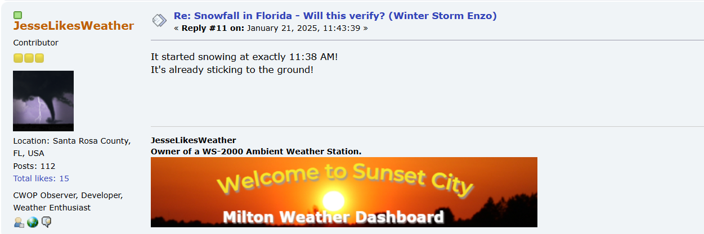
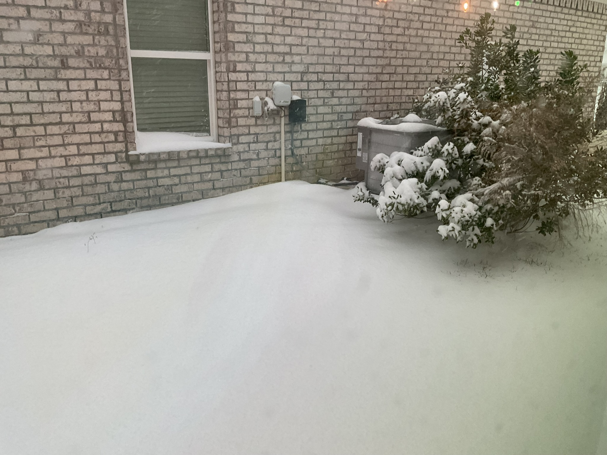

On January 21st 2025, the biggest snowstorm in Florida History occurred, many places in the Panhandle smashed the state record of 4 inches, me & 2 others offically set the state record of 10 inches!
On wxforum.net, I was able to log the event as it happened. 7 days before the event, I looked at the weather forecast, when I was shocked about what I saw on next Tuesday: Snow, in Florida? I thought the forecasts were being strange, so I didn't get my hopes up. But it didn't go away, and for once, I actually thought this was happening, but I didn't expect it to be this big. But the true reality of what this event was about to bring was going to be a lot more than I could have ever imagined.
Friday, January 17th, 2025, I open up a topic on wxforum.net, sharing what I was seeing on the weather forecast, I carefully noted that it was a couple od days out, so things could change, other weather enthusiasts agreed with me. I knew the forecasts was changing, but in a way that was not normal.
I was getting excited, but at the same time nervous, I, personally was a snow lover, I had rarely experienced snow in my life, and in the way that I was nervous, I was afraid it wouldn't turn out to be true. But then there is Psalm 37:4 - "Delight yourself in the LORD, and he will give you the desires of your heart."
I knew that the Lord could pull off an amazing event, I said to God the evening before it happened: "Lord, I thank you for caring about the desires of my heart, so if your will is for a lot of snow, then so be it, no matter what your will truly is, I will be happy, even if there isn't a lot of snow. Thank you God."
Most forecasts were predicting about 2-5 inches, I was satisfied with this, but what would come to pass would shock me. All the weather events I had watched online, other weather enthusiasts being there for the event, I was about to experience once for myself.
January 21st, the day came, the snow apppeared to be holding up, it was stalling just before it had reached my house, I was getting nervous, but then, my sister shouted: "Snow!" I grab the tablet I had and began recording the snow falling. Since the system was moving so slow, yet so large, this was going to last for hours. I logged the event on wxforum.net:
JesseLikesWeather - Reply #10 on: January 21st 2025, 11:43:39 AM CDT
"It started snowing at exactly 11:38 AM! It's already sticking to the ground!"

..A car traveling on my street slid off the road, you can see the driver stranded, thank God they were okay..
But all things end, at 9:38 PM CDT, after a whole 10 hours, the snow tapered off, we slammed the record of 10 inches. The snow stayed for a whole week, as the temperatures warmed back to 70 degrees, yet there was snow still on the ground, rapidly melting. I could go on that same hill I went snow tubing on today, and say: "There was once snow on this Florida hill."
I didn't forget to thank God for this amazing event, I thanked him for the desires of my heart, and for the amazing event he had planned for me. I was so thankful for this event, and I was so thankful for the Lord. I was so thankful for the snow, and I was so thankful for the snowstorm. This will never be an event I will take for granted, and I will never forget the memories I made that day.